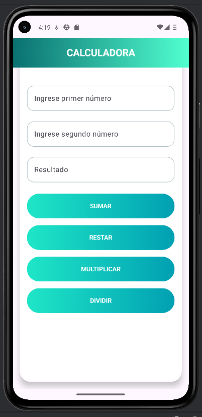
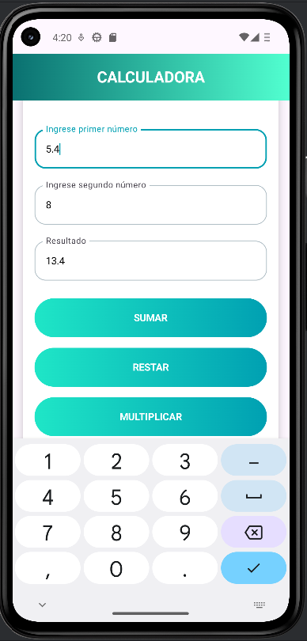

Una expresión es una estructura formada por operandos (valores o variables) y operadores, que al ser evaluada por el programa produce un valor final. Ese valor puede almacenarse en una variable, utilizarse en una condición o retornarse desde una función.
En términos generales, las expresiones representan la lógica del programa, ya que permiten:
En muchos lenguajes modernos, como Kotlin, incluso las estructuras de control pueden comportarse como expresiones, lo que hace el código más compacto y expresivo.
| Componente | Descripción | Ejemplo |
|---|---|---|
| Operandos | Valores o variables que participan en la operación | 5, x, "texto" |
| Operadores | Símbolos que indican la operación a realizar | +, -, *, /, &&, || |
| Resultado | Valor final obtenido tras la evaluación | 15, true, "Hola Mundo" |
Los operadores son símbolos que le indican al programa que realice operaciones específicas sobre uno o más valores.
| Operador | Nombre | Descripción | Ejemplo | Resultado |
|---|---|---|---|---|
+ |
Suma | Suma dos valores | 5 + 3 |
8 |
- |
Resta | Resta el segundo valor del primero | 10 - 4 |
6 |
* |
Multiplicación | Multiplica dos valores | 6 * 7 |
42 |
/ |
División | Divide el primer valor entre el segundo | 15 / 3 |
5 |
% |
Módulo | Devuelve el residuo de la división | 17 % 5 |
2 |
fun calcularDescuento(precio: Double, porcentaje: Double): Double {
return precio * (porcentaje / 100)
}
val precioOriginal = 200.0
val descuento = calcularDescuento(precioOriginal, 15.0) // 30.0
val precioFinal = precioOriginal - descuento // 170.0| Operador | Nombre | Descripción | Ejemplo | Resultado |
|---|---|---|---|---|
== |
Igualdad | Verdadero si los valores son iguales | 5 == 5 |
true |
!= |
Desigualdad | Verdadero si los valores son diferentes | 5 != 3 |
true |
> |
Mayor que | Verdadero si el primero es mayor | 10 > 5 |
true |
< |
Menor que | Verdadero si el primero es menor | 3 < 7 |
true |
>= |
Mayor o igual | Verdadero si el primero es mayor o igual | 5 >= 5 |
true |
<= |
Menor o igual | Verdadero si el primero es menor o igual | 4 <= 4 |
true |
fun main() {
val a = 10
val b = 20
println(a == b) // false
println(a != b) // true
println(a >= 10) // true
println(b <= 15) // false
}| Operador | Nombre | Descripción | Ejemplo | Resultado |
|---|---|---|---|---|
&& |
AND (Y lógico) | Verdadero si AMBAS condiciones son verdaderas | true && false |
false |
|| |
OR (O lógico) | Verdadero si AL MENOS UNA condición es verdadera | true || false |
true |
! |
NOT (Negación) | Invierte el valor booleano | !true |
false |
fun verificarAcceso(edad: Int, tienePermiso: Boolean, esEmpleado: Boolean): Boolean {
// Puede acceder si:
// 1. Es mayor de edad Y tiene permiso
// 2. O si es empleado (sin importar edad o permiso)
return (edad >= 18 && tienePermiso) || esEmpleado
}
val acceso1 = verificarAcceso(20, true, false) // true
val acceso2 = verificarAcceso(16, true, true) // true (es empleado)
val acceso3 = verificarAcceso(16, false, false) // falseEstos operadores permiten aumentar o disminuir el valor de una variable en una unidad o en una cantidad específica de forma concisa.
var contador = 5
contador++ // Aumenta en 1: contador = 6
contador += 3 // Aumenta en 3: contador = 9var numero = 10
numero-- // Disminuye en 1: numero = 9
numero -= 2 // Disminuye en 2: numero = 7Escribir una función que calcule el área de un círculo y otra que calcule el volumen de un cilindro, utilizando la primera función.
import kotlin.math.PI
import kotlin.math.pow
// Función para calcular el área de un círculo
fun areaCirculo(radio: Double): Double {
return PI * radio.pow(2)
}
// Función para calcular el volumen de un cilindro usando el área del círculo
fun volumenCilindro(radio: Double, altura: Double): Double {
val areaBase = areaCirculo(radio)
return areaBase * altura
}Escribir una función que calcule el factorial de un número.
fun factorial(n: Int): Int {
var resultado = 1
for (i in 1..n) {
resultado *= i
}
return resultado
}Escribir una función que calcule la distancia recorrida por un objeto.
velocidad y tiempo.
return para devolver la distancia recorrida.
fun calcularDistancia(velocidad: Double, tiempo: Double): Double {
val distancia = velocidad * tiempo
return distancia
}
// Uso de la función
fun main() {
val resultado = calcularDistancia(60.0, 2.0)
println("Distancia recorrida: $resultado km")
}
Escribir una función que calcule el salario total de un empleado.
horas_trabajadas y pago_por_hora.
return para devolver el salario total.
fun calcularSalario(horasTrabajadas: Int, pagoPorHora: Double): Double {
val salario = horasTrabajadas * pagoPorHora
return salario
}
// Uso de la función
fun main() {
val salarioTotal = calcularSalario(40, 5.5)
println("Salario total: $$salarioTotal")
}
Crear una función que calcule el Índice de Masa Corporal (IMC) y determine la categoría correspondiente.
fun calcularIMC(peso: Double, altura: Double): Pair {
val imc = peso / (altura * altura)
val categoria = when {
imc < 18.5 -> "Bajo peso"
imc < 25.0 -> "Peso normal"
imc < 30.0 -> "Sobrepeso"
else -> "Obesidad"
}
return Pair(imc, categoria)
}
// Uso de la función
fun main() {
val (imc, categoria) = calcularIMC(70.0, 1.75)
println("IMC: ${String.format(\"%.2f\", imc)}")
println("Categoría: $categoria")
}
Las expresiones permiten representar operaciones y decisiones en el código.
Los operadores construyen la lógica del programa mediante operaciones aritméticas, relacionales y lógicas.
Las funciones encapsulan expresiones para reutilizar código y organizar la lógica del programa.
package app.compose.textreutilizable.ui
import androidx.compose.foundation.background
import androidx.compose.foundation.layout.Column
import androidx.compose.foundation.layout.fillMaxWidth
import androidx.compose.foundation.layout.padding
import androidx.compose.material3.Text
import androidx.compose.runtime.Composable
import androidx.compose.ui.Modifier
import androidx.compose.ui.graphics.Color
import androidx.compose.ui.text.font.FontFamily
import androidx.compose.ui.text.font.FontWeight
import androidx.compose.ui.unit.dp
import androidx.compose.ui.unit.sp
@Composable
fun DatosEstudiante(
nombre: String,
edad: Int,
carrera: String
) {
Column(
modifier = Modifier
.background(Color(0xFF45C89C))
.fillMaxWidth()
.padding(16.dp)
) {
Text(
text = "Nombre: $nombre",
fontFamily = FontFamily.Monospace,
fontWeight = FontWeight.Bold,
fontSize = 22.sp,
color = Color.White
)
Text(
text = "Edad: $edad años",
fontSize = 18.sp,
color = Color.White
)
Text(
text = "Carrera: $carrera",
fontSize = 18.sp,
color = Color.White
)
}
}package app.compose.textreutilizable.ui
import androidx.compose.runtime.Composable
import androidx.compose.ui.tooling.preview.Preview
@Preview
@Composable
fun PantallaPrincipal() {
DatosEstudiante(
nombre = "Ofelia Jessica",
edad = 20,
carrera = "Ingeniería en Software"
)
}package app.compose.textreutilizable.ui
@Composable
//Text
fun TextUi(titulo: String, gradient: List) {
Box(
modifier = Modifier
.fillMaxWidth()
.background(
brush = Brush.horizontalGradient(gradient)
)
.padding(20.dp),
contentAlignment = Alignment.Center
) {
Text(
text = titulo,
color = Color.White,
fontSize = 22.sp,
textAlign = TextAlign.Center,
fontWeight = FontWeight.Bold
)
}
}
// TEXTFIELD REUTILIZABLE de Calculadora
@Composable
fun CampoTexto(valor: String, etiqueta: String, onChange: (String) -> Unit) {
TextField(
value = valor,
onValueChange = { nuevoValor ->
if (nuevoValor.matches(Regex("^\\d*\\.?\\d*$"))) {
onChange(nuevoValor)
}
},
label = { Text(etiqueta) },
modifier = Modifier.fillMaxWidth(),
keyboardOptions = KeyboardOptions(keyboardType = KeyboardType.Number),
colors = TextFieldDefaults.colors(
focusedContainerColor = Color(0xFFFAFAFA),
unfocusedContainerColor = Color(0xFFFAFAFA),
focusedTextColor = Color.Black,
unfocusedTextColor = Color.Black
)
)
}
// BOTÓN REUTILIZABLE
@Composable
fun BotonOperacion(texto: String, gradient: List, accion: () -> Unit) {
//se cambio Button a Box para poder usar degradado
Box(
modifier = Modifier
.fillMaxWidth()
.height(55.dp)
.background(
brush = Brush.horizontalGradient(gradient),
shape = RoundedCornerShape(30.dp)
)
.clickable { accion() },
contentAlignment = Alignment.Center
) {
Text(
text = texto,
color = Color.White,
fontWeight = FontWeight.Bold
)
}
Spacer(Modifier.height(15.dp))
}
fun toDouble(texto: String): Double {
return texto.toDoubleOrNull() ?: 0.0
}
class OpcionesCalculadora {
fun sumar(a: Double, b: Double): Double = a + b
fun restar(a: Double, b: Double): Double = a - b
fun multiplicar(a: Double, b: Double): Double = a * b
fun dividir(a: Double, b: Double): String {
return if (b != 0.0) {
(a / b).toString()
} else {
"Error: división entre 0"
}
}
}
@Preview
@Composable
fun Calculadora() {
val logic = OpcionesCalculadora()
var num1 by remember { mutableStateOf("") }
var num2 by remember { mutableStateOf("") }
var resultado by remember { mutableStateOf("") }
Scaffold(
topBar = {
TextUi(
titulo="CALCULADORA",
gradient = listOf(Color(0xFF0A7070), Color(0xFF51FFD0))
)
}
) { padding ->
Card(
modifier = Modifier
.fillMaxWidth()
.padding(16.dp),
shape = RoundedCornerShape(24.dp),
elevation = CardDefaults.cardElevation(defaultElevation = 8.dp),
colors = CardDefaults.cardColors(
containerColor = Color.White
)
) {
Column(
modifier = Modifier
.fillMaxSize()
.padding(padding)
.padding(16.dp),
horizontalAlignment = Alignment.CenterHorizontally
) {
// CAMPOS DE TEXTO
CampoTexto(num1, "Ingrese primer número") { num1 = it }
Spacer(Modifier.height(15.dp))
CampoTexto(num2, "Ingrese segundo número") { num2 = it }
Spacer(Modifier.height(15.dp))
CampoTexto(resultado, "Resultado") {}
Spacer(Modifier.height(25.dp))
// BOTONES
BotonOperacion(
texto= "SUMAR",
gradient = listOf(Color(0xFF1FE6C7), Color(0xFF00A0B2))
) {
resultado = logic.sumar(toDouble(num1), toDouble(num2)).toString()
}
BotonOperacion(
texto= "RESTAR",
gradient = listOf(Color(0xFF1FE6C7), Color(0xFF00A0B2))
) {
resultado = logic.restar(toDouble(num1), toDouble(num2)).toString()
}
BotonOperacion(
texto= "MULTIPLICAR",
gradient = listOf(Color(0xFF1FE6C7), Color(0xFF00A0B2))
) {
resultado = logic.multiplicar(toDouble(num1), toDouble(num2)).toString()
}
BotonOperacion(
texto= "DIVIDIR",
gradient = listOf(Color(0xFF1FE6C7), Color(0xFF00A0B2))
) {
resultado = logic.dividir(toDouble(num1), toDouble(num2))
}
}
}
}
}
